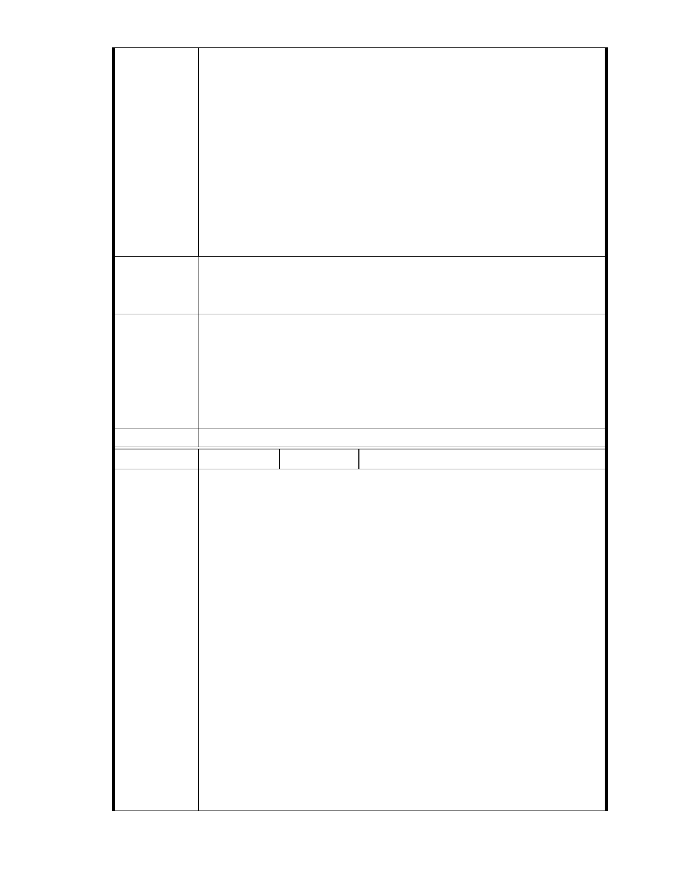

陳情理由
建議辦法
一、近年來建商因勢利導向浮濫開發山坡地，造成台灣各地逢雨必淹、
每颱則大災，造成人身財產劇創，大地反撲殷鑑不遠，國土復育之
路漫漫，此時若再通過任何敏感區山坡地開發案，無異雪上加霜，
對於該地附近居民實為威脅。
二、「慈濟功德會」在台灣社會一向享有清譽並受敬重，因為慈濟身影總
是在救災第一現場聞聲救苦，相信救災經驗豐富的慈濟人對於「山
坡地開發過當」釀成重大災變的慘況一定比大家感同身受。
三、大湖公園北側保護區不管變更之用途為何，既是保育區就不應有開
發之情事，「一念之非即種惡因，一念之是即得善果」所謂是非應是
建立在公理正義之上，而不是其目的之正當性，開發保育區為其「志
工訓練救災調度中心」卻極可能是釀災的大地雷豈不是天大諷刺？
祈台北市都發局對於台北市所有山坡地開發案應擬定明確準則，往後之
開發申請者即循此標準辦理，無須再以個案審查而浪費社會資源，並杜
絕流弊，樹立典範。
一、本案申請範圍於慈濟購得前已遭非法填土，實不具保護區之功能，
市府說明
今申請單位欲興辦社會福利事業，故依法辦理都市計畫變程序；目
前申請方案較先前方案已大幅降低開發強度、調整使用項目並承諾
大面積滯洪設施等回饋事項，顯示申請單位欲改善現況之誠意。
二、後續審理程序將要求申請人加強與在地區民、社會大眾，就基地現
況、規劃方案及環境助益作為等方面加強溝通。
委 員 會 決 議 同編號 1。
編 號 16
陳情人 陳新土
一、我是在地農民，一生耕作，自從民國 68 年開始北側基地遭人為填土
墊高堵塞河口山溝，導致排水不良，使上游之農田形同蓄洪池，30
年來逢雨必淹，使當地農民無法耕作和收成，損失慘重，基於概括承
受之原則，慈濟應負起農民損失賠償之責任。
二、現在慈濟意欲在大湖段地區設置開發案，昧於現實地質條件不良（沉
泥質爛泥、黏土地質及潛在順向坡之危險），地理環境不佳（位於河口、
礦坑舊址、基隆斷層），法律條文不符（保護區問題）卻選擇下下策，
執意與大自然相抗爭，不尊重學者專家之專業及意見及與當地住民為
陳 情 理 由 敵，剝奪當地居民的生存權及財產權，更無視法律之存在，想以家大業
大，挾財團之勢力迫令政府屈服就範，一點都沒有法治素養及守法精
神，其做法及心態令人質疑，證嚴大師向慈濟人開示，提及「應保護人
間淨土，保護大自然大地於永恆，不應人為破壞殆盡，才能留給後世子
孫一片樂土」，慈濟人應言猶在耳，不可拂逆其旨意，以免損害慈濟所
建立之社會形象，今天慈濟開發案應知難而退，不要只著眼於大湖段之
基地，死纏爛打，根據往昔會議皆有記錄不適開發之原因及理由，相當
明確，因此無論學者專家或政府官員皆認為此案不適開發，嗣經市政府
善意提供九筆土地替代方案供其選擇利用，為何慈濟卻始終只情有獨鍾
於大湖段基地，而不接受各方善意之建議，可否闡明其背後的真正動機
- 22 -